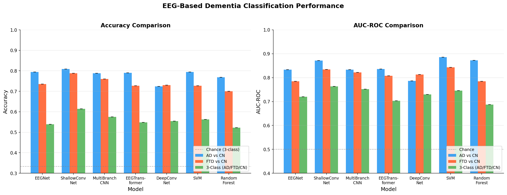
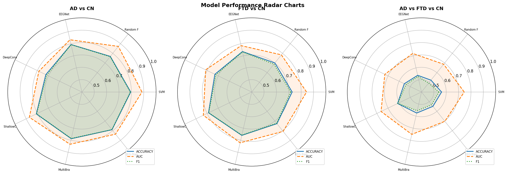
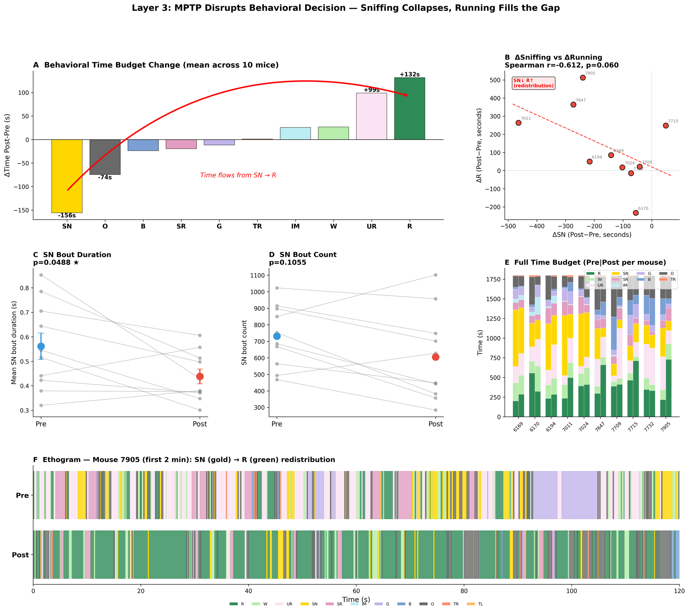
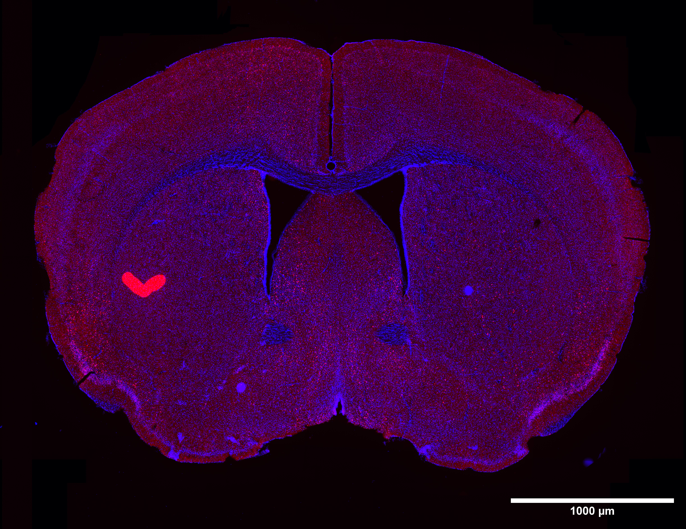

結合 AI 工具與
跨領域神經科學研究
Combining AI Tools with Interdisciplinary Neuroscience Research
劉宇舜 · 中研院 吳玉威實驗室 / 陽明交大 魏群樹實驗室 · 2026.03.31
🧠 自動化研究 × 自學 × 認真過每一天
關於我 & 我的研究旅程
- 🔬 研究方向：用 AI（視覺基礎模型）做動物行為自動辨識
- 📄 第一作者論文 — CASTLE：基於 DINOv2 的無監督行為分析
- 📮 投稿 Neuron → 送審 → 被拒絕
- 💡 一個有故事的博士生，提供各位職涯與研究選擇的參考
- 進入神經科學
跨領域的陣痛期 — 完全不同的思維方式
- 發現問題
動物行為標注太慢、太主觀
- CASTLE 誕生
DINOv2 + 無監督學習 → 自動行為分群
- 投稿 Neuron
送審後被拒 — 但 reviewer 的回饋很寶貴
- 現在
持續 benchmark，準備再投
AI Scientist 做了什麼？
- 🧪 自動生成研究假說
- 💻 自己寫實驗程式碼
- 📊 自動跑實驗、分析結果
- 📝 自動撰寫完整論文 (LaTeX)
- 🔍 自動 Peer Review
- 🔄 迭代改進
💰 ~$15 USD / paper · ~數小時
[ Nature Fig. 2 — AI Scientist Pipeline 示意圖 ]
📌 演講時切換到論文頁面展示
AI 能力展示：EEG 失智症分類
AI 自主完成：Comprehensive Benchmark of ML & DL for EEG-Based Dementia Differential Diagnosis
AD vs CN / FTD vs CN / Multiclass — 88 subjects, ~29K epochs, 13 models

Performance comparison across 13 models

Multi-metric radar chart analysis
AI 自動研究：優勢與限制
✅ 優勢
- 📈 產出越來越像正式論文
- 🌉 擅長把 A 領域方法搬到 B 領域
- ⚡ 速度極快、成本極低
- 🔄 可大量迭代、不會疲勞
⚠️ 限制
- 🚨 會犯資料洩漏 (Data Leakage)
- 📉 會產出意義不明的圖表
- 🤖 缺乏真正的科學直覺
- 🔮 但這些都在快速改善中…
🔑 時代紅利：做困難事情的門檻大幅降低
02
門檻到底有多低？
Live Demo · AI 驅動的數據分析
案例：AI 數據分析實戰
🦞 龍蝦行為分析
- 1️⃣ 一段對話 → AI 設計分析 pipeline
- 2️⃣ Step-by-step panel
- 3️⃣ AI 主動指出錯誤並說服修正
- 4️⃣ 產出可放進論文的圖
🐭 MPTP 老鼠團隊分析
- 🧪 Agent 1 — SG Parameter Sweep
- 📊 Agent 2 — Pre vs Post Profiles
- 🔍 Agent 3 — Phase Decomposition
✅ 3 sub-agents → 30 分鐘後自動彙報
AI 團隊分析 — 指令 → 結果

行為時間分配 + Bout 分析
🔑 人只負責「提問」，AI 負責「設計 + 執行 + 分析 + 報告」
「現在人人都是軟體工程師」
— Naval Ravikant
現在，人人都是數據分析師
AI 擁有所有做研究的基礎知識
關鍵問題是 — 你會不會問問題？
AI 的執行力
＋ 你的想像力
＝ 你的超能力
The tools are ready. The question is: what will you build?
03
想像力從哪裡來？
自學 · 多樣性 · 知識碰撞
或許佛陀可以苦思 20 年來創造思想，
但身為普通人的我，透過接觸不同的事物，
讓充滿多樣性的資訊在腦中相遇，
是最容易發生創意的方式。
CEBRA — 神經訊號 × 行為
玉威分享 CEBRA：用 Contrastive Learning 將神經訊號映射到低維行為空間
CEBRA Demo — 神經訊號 → 行為解碼
CASTLE — 無監督行為分群（M1 / M2 / S1）
- 🧠 Neural data → Nonlinear encoder
- 🔗 Contrastive loss: attract similar, repel dissimilar
- 📐 Low-dimensional embedding → 行為解碼
視覺編碼器的 Attention Heads
DINOv2 的 8 個 Attention Heads 視覺化
🔍 發現
- ✋ 其中一個 Head 專注在小鼠的手上
- 🧠 不同 Head 關注不同身體部位
- 💡 視覺編碼器自動學會了小鼠的姿態結構
→ 無需任何標注，模型就能「看懂」動物行為的關鍵特徵
從 CEBRA 到 CASTLE 的誕生
- 📚 其中的 C = Contrastive Learning（對比學習）
→ 知識體系剛從「百家爭鳴」到「秦朝統一」
- 🎬 自學完 YouTube 上所有對比學習教學
- 💡 發現 OpenAI 的 CLIP 才是對比學習的精髓
→ 對齊文字編碼器與圖像編碼器的特徵向量
- 🔬 直覺：視覺編碼器是通用的，可以描述所有東西
→ 確實可以抓到小鼠姿態變化！→ CASTLE 誕生
給跨領域研究者的建議
- ⚠️ 不要過度依賴指導教授
有一天你想知道的事情，地球上沒有比你懂的人了
- 📺 YouTube + GPT — 知識流動性已經非常高
- 🎯 訓練自己的品味
沒有審核機制 → 有些 YouTuber 亂講一通
- 🔥 我的標準：找到有熱情的人，而不是為了點閱率的人
04
我的跨領域旅程
「接下來是比較沒那麼有參考價值的部分」
從機械系到神經科學
- 機械系（大學 + 碩士）
我爸覺得機械好，我沒意見就選了
- 大三：看完《刀劍神域》和《命運石之門》
覺得神經科學好有趣！想去碰碰看
反正隨時可以離開去台積電輪班 😂
- 遇到做神經訊號數據分析的教授
自學 decoding，待了一年半
- 遇到玉威 → 剛好用上剛培養好的技能
做 electrode pooling，用上之前打比賽學的演算法
- 畢業後正式踏入神經科學領域
認真研究 CEBRA → 發展成 CASTLE
- 推甄博班
之前當演算法比賽助教的老師在交大資工 → 推薦信
「認真過每個時刻」
每一段看似無關的經歷，都可能在未來成為你最重要的連結
Stay curious. Stay hungry. Connect the dots.
Q & A
感謝聆聽 · 歡迎提問
劉宇舜 · CASTLE-ai/castle-ai · 中研院 吳玉威實驗室
Supplementary Figure

page source: YuTing